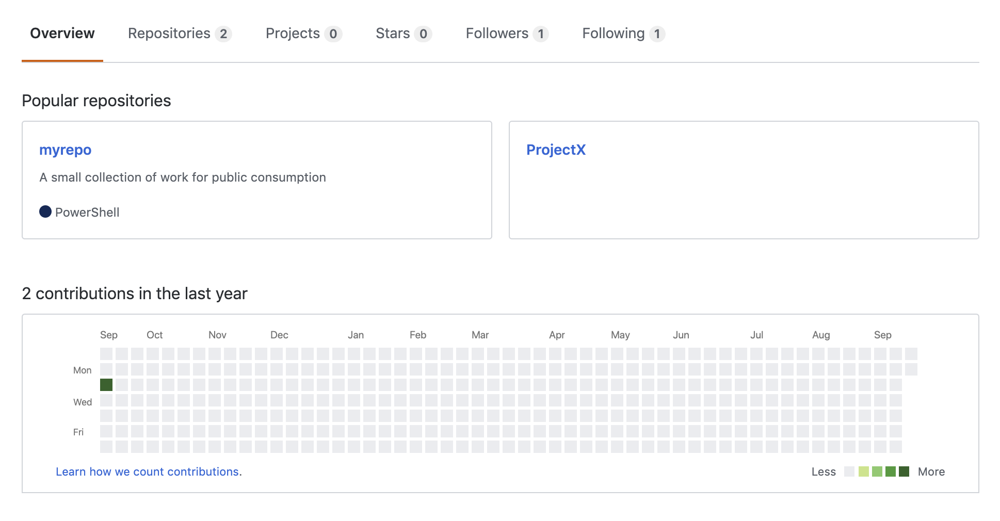
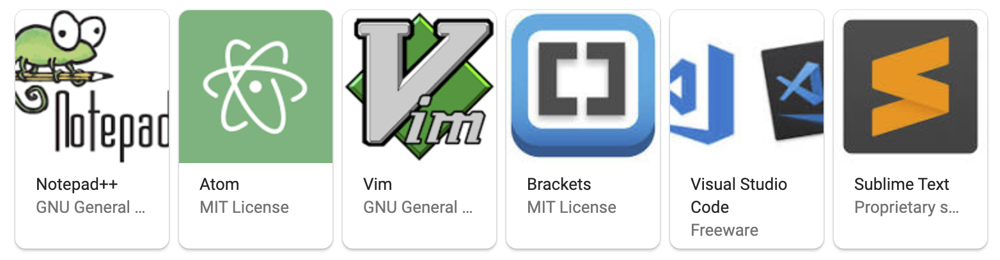
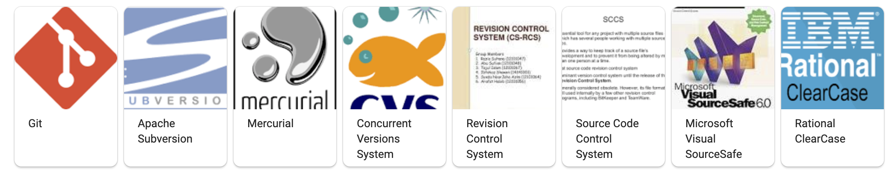

How NOT to get hired
in DevOps
Created by @JeffroeBodine
Don't use a professional looking email address
sassypants6969@aol.com
Don't have a resume with alphabet soup
Bash Shell Scripting, Git, bitbucket, Jenkins, Nexus, Ansible, Nagios, Oracle Virtual Box, Linux Centos 6&7 RHEL 6&7, Ubuntu, SUse, LVM, NAS, Apache, Jira/kanban board/Confluence/, Strong verbal and written communication skills, Apache, Oracle,APACHE web Server, Process management Automation, QA, Bash, Quality control, Hardware, x86, Dell, Content, Scrum, Agile, Clients, SSH, WINDSCP, Customer service, Servers, Help Desk, Customer support, Shell Scripting Version Control, Shell scripts, Database, MySql, Documentation, Tech Support, Confluence, English, French, German,Fast, Troubleshooting, Firewalls, Upgrades French language, Web Server, Help Desk, Written communication skills, HTTP, Inventory, LAMP, Linux, Managing, Memory, Access, Migration, NAS, NFS, Network installation Network, JavaScript, Java, C/C++, Python, C#, AWS, SQL, JSP, HTML, PHP, Database design, Networking, Jenkins, Website and electronic marketing, Docker, NoSQL, Ansible, Redis, SVN, Github, MongoDB, Elasticsearch, Graphite, Puppet, Chef, Kubernetes, OpenStack, Nginx, MariaDB, Salt-stack, High Avaialability, Bind DNSDon't put your Github repo on your resume if...
Don't have a 10+ page resume
If you're working with a recruiter. Don't ask them for help
Don't do any reasearch about the company you're interviewing with
Don't research the stack that they're working in
Don't show up on time

Don't show up prepared
Don't clean your room
Bait and switch
the same person that shows up to the interview
Don't ask any questions
Don't know basic terminology
Constantly talking
Don't have any experience with multiple text or code editors

Don't use source control

Don't know about or use any CI/CD pipelining tools
Don't know how to write a basic test
var assert = require('assert');
var fizzbuzz = require('../src/fizzbuzz');
describe('FizzBuzz', function() {
it('should return a list of the correct size', function() {
var output = fizzbuzz.run(1, 5);
assert.strictEqual(output.length, 5);
});
});
Think that security is the responsibility of another team
Don't know anything about the Cloud
(On-prem is god)